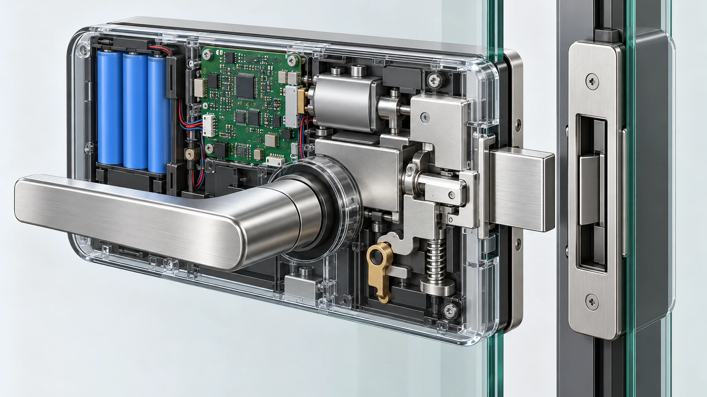

本文用于采购与项目规划讨论，不代表所有玻璃门都能安装智能锁，也不代表 WAFU 提供标准化玻璃门电子锁 SKU。
玻璃门只是智能锁闭合系统的一部分。门体配置、现有五金、安装接口、闭合行为、供电路径和应急开门责任，都会影响方案能否进入样品验证。
1. 选型号前先划定项目决策边界
第一步不是决定采购哪一个锁型号，而是确认项目是否具备可以评审的接口资料。“玻璃门”这个描述并不能说明承载部件、可用安装面、闭合方向以及锁舌与锁扣的关系，也不能说明电气施工和应急开门由谁负责。
在项目团队完成门体与五金资料评审前，应把拟议锁具视为候选平台。如果使用场景、安装空间和开锁方式值得进一步评审，可以把 WF-010、WF-019 或 WF-026 纳入候选。但这并不等于已经确认适配，最终决定应基于相关图纸、项目五金、样品安装和双方确认的验收标准。
评估边界应明确门体和玻璃五金供应商、安装方、门禁或锁具供应商、电气承包商以及项目运营方各自负责的接口。如果其中一项尚未定义，仍可以准备报价，但报价应以补充资料和样品评审为前提。

2. 记录完整门体配置，而不只是记录材质
讨论安装方式前，应先记录真实门体配置。关键区别通常不是玻璃与非玻璃，而是活动门扇如何闭合，以及锁扣侧有哪些稳定的固定结构。
例如，无框单扇门可能使用地弹簧或夹具五金，并与固定玻璃、墙面锁扣或独立门框闭合。带框玻璃门可能提供不同的安装和走线条件，但仍需要核对框体材料、截面几何和现有五金。双扇门会增加中缝和非主动扇条件，改变可用的锁扣接口。旋转门、平开门、推拉门以及特殊防火或受控门系统，都有自己的项目约束，不能互相替代。
至少收集门体正面、背面和边缘照片；有条件时提供门体及五金图纸；记录开启方向、闭合侧清晰照片和当前闭合或锁止五金。还要记录项目需要远程释放、凭证开门、本地控制还是组合方式。这样供应商才有具体资料可评估，避免围绕假设的门体条件设计。
3. 把安装接口与锁扣接口作为一个系统评估
锁体、安装支架或夹具、活动门扇、锁扣以及固定侧支撑必须作为一个机械关系评估。只看锁体本身，会遗漏最重要的问题：闭合力最终传到哪里？反复使用后，什么结构能够维持锁体与锁扣的关系？
评审应识别结构安装面、把手和夹具五金周围的空间、锁扣侧支撑、电缆与电池维护空间，以及现有门体五金能否继续使用。同时还要记录玻璃或相邻结构上是否计划钻孔、夹持或增加转接件。此类工作必须结合项目五金和玻璃供应商要求评审，不能从通用文章中直接假设。
如果某个平台看起来有潜力，应要求供应商提供基于真实门体几何的安装概念，展示支架、锁体和锁扣的位置。生产下单前要检查这份概念，并在样品上复现。图纸最好区分已确认尺寸和待测项目，不要把通用尺寸写成已确认数据。
4. 安装前定义供电和应急开门责任
供电和应急开门是运营设计决策，不是安装结束后再补充的细节。项目需要明确谁监控电量或供电状态，谁负责更换或维护能源组件，正常操作不可用时怎么办，以及哪些人员有权使用应急路径。
从计划采用的开锁方式和运营责任开始。电池供电、有线供电、受控释放或混合方案，各自有不同的安装和维护依赖。评估应定位供电接口、维护入口、线缆过渡和外壳开启方式；在最终配置完成验证前，不应宣称具体电池寿命或电气性能。
应急开门还需要形成书面的项目规则。正确路径取决于建筑、使用场景、当地要求和保留的门体五金，可能涉及机械操作、授权供电或释放方式、受控凭证，或现场响应流程。样品评审应由相关项目责任方共同验证约定路径，不能把未经测试的示意图描述为保证可用的应急开门方案。

5. 通过完整闭合循环验证对齐关系
门扇完全闭合时的静态对齐还不够。样品需要经过接近、初次接触、最终闭合、锁止、释放和重新开启的完整循环观察。门扇下垂、闭门器力、密封条阻力、把手操作、地面条件和五金调节，都会改变锁体与锁扣在循环过程中的关系。
项目团队应先约定需要观察的项目：门扇能否稳定到达目标闭合位置；锁扣关系是否保持稳定；是否出现摩擦、撞击或卡滞；重复循环后正常开锁方式是否仍能工作；安装是否保持安全和可维护。这些都是实际样品上的观察记录，不是通用性能承诺。
如果门体使用频繁或闭合条件会变化，应在五金调节到目标项目状态后重新验证。如果对齐依赖临时垫片、手动施力或安装人员持续扶住门扇，则接口还没有完成验证。

6. 用样品测试把假设转化为观察结果
样品测试是项目把假设转化为证据的阶段。样品应包含目标门体配置，或能够证明等效的模拟结构，并包含拟议安装接口、选定开锁方式以及已确认的维护或应急开门安排。一次成功开锁不能代表项目已经验证。
建议使用简单记录表，记录样品组件、配置日期、门体状态、参与人员、观察结果和未完成事项。
| 验证主题 | 项目团队应观察的内容 |
|---|---|
| 门体与五金适配 | 安装面、五金周围间隙、锁扣侧支撑、维护空间以及计划使用的转接件或夹具 |
| 闭合与锁止 | 可重复闭合、锁扣关系、无不可接受的摩擦或卡滞，以及目标门体状态下稳定锁止 |
| 正常开锁 | 项目选定的开锁方式、授权行为和用户操作流程 |
| 供电与维护 | 计划维护的可达性、低电量处理流程和日常检查责任 |
| 应急开门 | 已约定的授权流程、负责人员以及可以使用该流程的条件 |
| 交接控制 | 组件清单、配置记录、安装说明、未解决风险和审批责任 |
样品报告不应把观察结果转化为未经支持的保证。应记录测试了什么配置、哪些项目通过、哪些项目需要修改，以及量产或现场推广前必须重新确认的内容。

7. 准备可评审的 RFQ 资料包
当 RFQ 把已知项目事实与待确认问题分开时，更容易得到可评估的回复。提交门体资料，并说明希望锁具完成什么工作。不要只给一张远景照片或一个型号名称，让供应商自行推断完整安装条件。
- 门体配置、开启方向、门体和五金图纸（如有），以及正面、背面、边缘和闭合侧清晰照片。
- 项目地点和使用场景，包括是否涉及当地法规、物业管理或特殊门体要求。
- 预期的开锁方式，以及门禁、凭证、远程释放或运营管理要求。
- 锁扣、锁片或接口支架所需的固定侧结构，以及钻孔、夹持或改造限制。
- 供电预期、维护责任和项目要求的应急开门流程。
- 数量、样品计划、目标市场、包装或标签需求，以及最终安装批准责任方。
- 需要的文件、检查记录、变更控制流程或交接资料。
这不能替代样品，但可以让项目方和供应商围绕样品范围建立共同基础。
8. 结论
玻璃门智能锁项目应从闭合系统开始，而不是从目录选型开始。可行项目需要有记录的门体配置、确认过的安装与锁扣接口、明确的供电和应急开门责任，以及能够展示目标闭合和开锁行为的样品。
只有在取得图纸、五金和项目要求后，才能把 WF-010、WF-019 和 WF-026 作为候选平台讨论。初步评估通常应先提交门体资料、目标开锁方式和运营要求，再进行图纸评审、样品安装和记录式验证，而不是作出普遍适配承诺。
申请玻璃门项目评估
请提供门体图纸或照片、开启方向、五金状态、目标数量、开锁要求、供电预期和计划中的应急开门流程。WAFU 可据此明确图纸评审与样品验证范围。
本文用于采购与项目规划讨论，不代表所有玻璃门都能安装智能锁，也不代表 WAFU 提供标准化玻璃门电子锁 SKU。